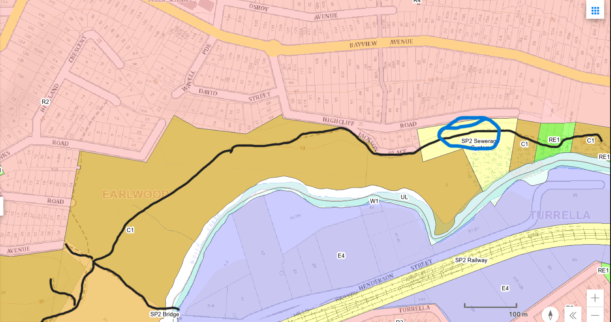
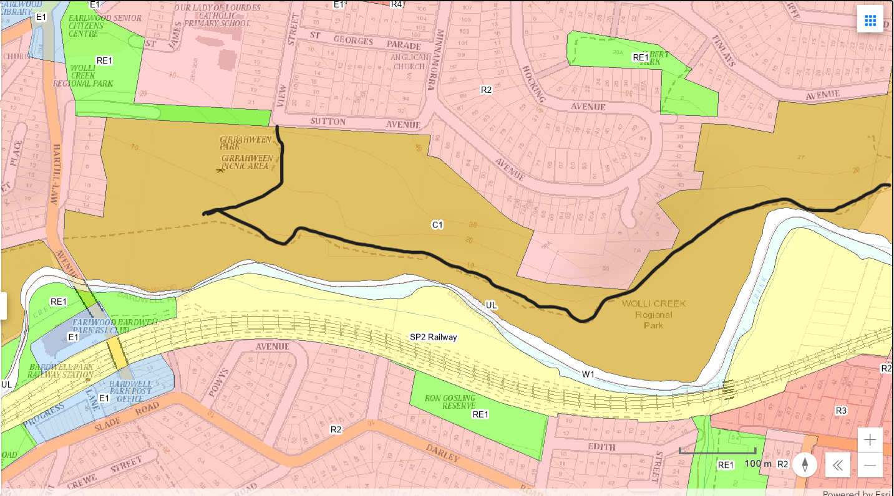
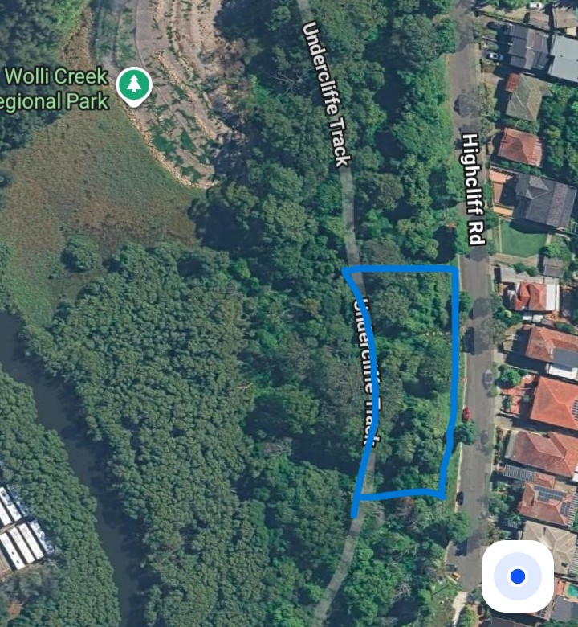
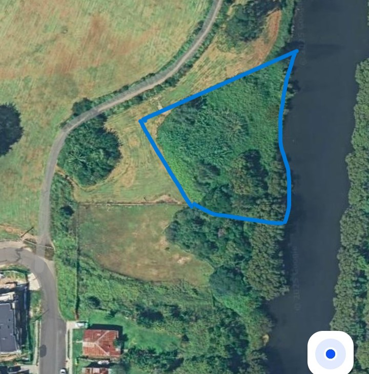
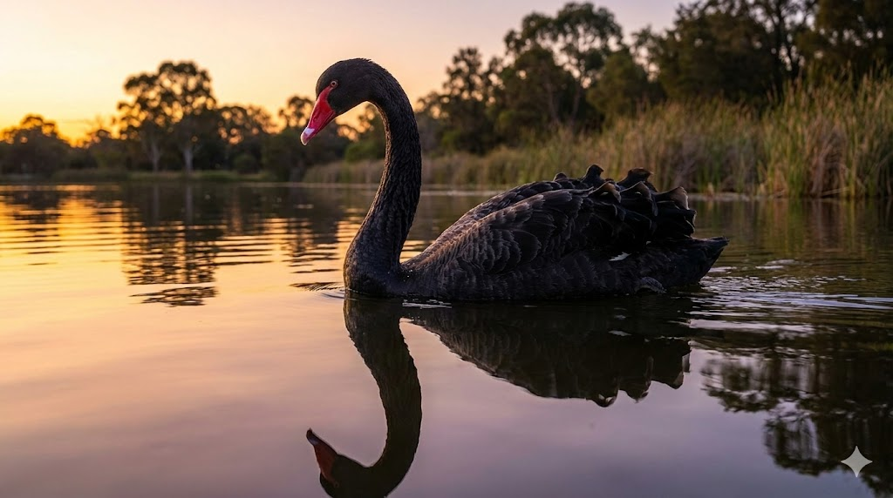

Wolli Creek Valley
Cultural Guided Tour
3.5 hours · 10 landmark stops · Bidjigal & Dharawal Country · Inner West Sydney
Walking Country with Jessy
The Wolli Creek Valley Cultural Guided Tour is a 3.5-hour walking journey through one of Sydney's most extraordinary hidden corridors — a living bushland reserve in the heart of the Inner West, where Bidjigal and Dharawal people have lived, gathered, and left their mark for thousands of years.
Your guide Jessy Haiyang — descendant of the Bidjigal and Iningai peoples of south central Queensland — has spent years walking this valley, studying its ecology and deepening her understanding of the cultural knowledge embedded in every rock, plant, and waterway. On this tour, she shares what she's learned: not as a museum exhibit, but as living knowledge, still relevant and still present in the landscape today.
You'll taste bush foods, see ancient cave paintings, walk beside a tidal saltwater marsh, and witness an active flying-fox colony of national significance. You'll also see bush regeneration in action — a reminder that caring for Country is ongoing work. Five percent of every tour booking goes directly to supporting revegetation in the valley.
Walking the Valley
The route follows the Wolli Creek corridor for approximately 4 km through the heart of the reserve. The black line marks the walking track across three sections of the valley — from Tempe Station Carpark in the east, through the bushland mid-section, to the upper valley and creek crossing in the west.



10 Landmark Stops

Tempe Station Carpark — Welcome to Country
Meet Jessy at the carpark. The tour opens with a Welcome to Country — an acknowledgement of the Bidjigal and Dharawal peoples whose Country we walk on, an introduction to the valley ahead, and an overview of what you'll see, taste, and hear across the next 3.5 hours.

Valley Entrance — Ecology Overview
Enter the Wolli Creek Valley and take in its scale. Jessy introduces the valley's ecology — the creek corridor, its 100+ native bird species, resident swamp wallabies, and the significance of this bushland as a rare urban wildlife refuge. You'll begin to see the valley not as a park, but as a living system with deep time.

Tidal Saltwater Marshlands
The ancient tribal meeting point at the confluence of Wolli Creek and Cooks River. For thousands of years this was a vital food source — shellfish, oysters, and mullet teeming in the tidal shallows. Jessy shares the deep cultural significance of waterways in Eora life, the middens that remain as evidence of this history, and the ecology of the surviving marshland.

Ancient Cave Paintings
The centrepiece of the tour: 27 hand prints and 2 feet prints left by Bidjigal and Dharawal artists — up to 6,500 years old. Jessy shares the cultural meaning of the ochre pigments, the technique of the artists, and what these markings tell us about the people who made them. Take time to sit with the paintings. This is a sacred place.

Bush Foods Walk — Part I
Jessy identifies native edible and medicinal plants along the trail — lomandra for basket weaving, acacia seeds ground for flour, native mint used in healing. You'll taste where appropriate and learn the Dharawal names for key species. This is knowledge that was passed across tens of thousands of years — and it's written right here in the landscape.

Ochre Rock Mine
The source of the pigments used in the cave paintings. Yellow, white and orange sandstone ochre is visible in the rock face here. Jessy explains how ochre was harvested, prepared and mixed — for ceremony, body decoration, and the creation of art that has survived six and a half thousand years. You're standing at the origin of the paintings you just saw.

Bush Regeneration Site
See active native planting and weed removal in progress — the slow, patient work of restoring the valley's original plant communities. Jessy explains which species are being reintroduced, how regeneration works alongside cultural custodianship, and how 5% of every tour booking contributes directly to this work.

Grey-headed Flying-fox Colony
One of Australia's most significant flying-fox roosts — a threatened species of national importance. The colony at Wolli Creek numbers in the thousands. Jessy shares the ecological role of flying-foxes in pollination and seed dispersal across eastern Australia, and their place in Aboriginal culture as a season-marker and food source of great significance.

Bush Foods Walk — Part II & Creek Crossing
Continue identifying native species as you walk the creek corridor. Jessy points out trees used for canoe construction and bark shelters, plants used in ceremony, and the Dharawal names for the waterway itself. Cross the creek and pause in the full valley soundscape — this is what the valley has sounded like for thousands of years.

End Point — Debrief & Farewells
The tour concludes with a group debrief and open Q&A. Jessy shares recommendations for further learning, nearby cultural sites, and how to continue supporting the valley and the communities who care for it. The group disperses from one of three end points depending on the chosen route. Tours finish between 1:20 PM and 1:40 PM.
Practical Information
What to Bring
Comfortable walking shoes, water (1.5 L minimum for a 3.5-hour walk), sunscreen and hat, insect repellent, rain jacket if forecast. A light snack is optional.
Accessibility
The route is on natural bush tracks — uneven ground, some inclines, one creek crossing. Not suitable for wheelchairs or prams. Suitable for most fitness levels. Contact Jessy if you have specific accessibility needs.
Cancellations & Weather
Tours run in light rain. Cancellations due to severe weather are made by 7am on the day of the tour. Full refund or reschedule offered. See the Bookings & Refunds Policy for full details.